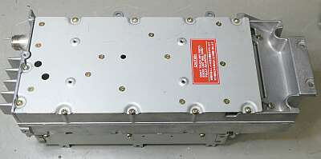
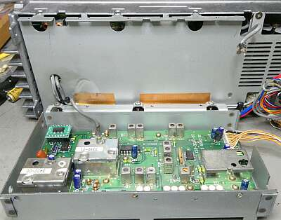
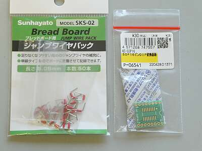
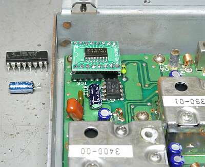
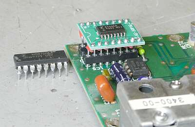

 |
取り敢えず故障個所を見つけ、その後保管のために仮に組み立てていたものから、改めて問題のユニット ＵＴ-１０を取り外しました
このユニット上側は、高周波部です |
 |
ユニット下側にPLL基板があります
その角部分に、今回壊れていたＰＬＬ-ＩＣが取り付いています
この写真は、問題のあったPLL-IC交換場所が分かりやすいように、交換後に撮ったものです
このIC部分に、ウレタンと思われる緩衝材が取り付いていましたが、劣化が激しく取り外しました |
 |
今回の対応に際し、お世話になったパーツ
ＳＯＰ１６Ｐｉｎ=>ＤＩＰ変換基板
と
ブレッドボード用のジャンプワイヤ
このジャンプワイヤの片側を１８０°ひねって使用することで、うまい具合にＩＣソケットに対応できました |
 |
ICとコンデンサを取り換えた様子
入手した変換基板のサイズが大きく、IC傍に縦に立っていた電解コンデンサ（５０Ｖ４．７μ）に当たるので、このコンデンサも取り外して横向きに取付し直しました |
 |
今回対処したＰＬＬ－IC部分のUpです
全体に足が長くなるのは覚悟で、今後のトラブルを考えＩＣソケットを採用しました（丸ピン型）
結果、動作に問題はありませんでした |
PLL-IC交換で、次なるトラブルの発生が見つかるかも？と思ったのですが、おかげなことに他のトラブルはありませんでした
このPLL-IC交換のみで、１２００MHｚが運用できなかった問題は解決しました |
| |
切れたPLの交換を行い、フロントパネルを外してガタついていたボリューム類の取付を締め直し、ガリオーム対応を実施、最後に送受スペックの確認を行い、修理対応デスク前の棚にあるＴＳ-７７０と入れ替えました
電気的なスペックについて
３０年以上経過した今でも、新品時のスペックをクリアできているところは素晴らしいことです
入手から1年がかり・・・足元が少しだけ片付きました |
| 2023．11 ＪＡ４ＦＵＱ |
大元の電源を入れっぱなしが良くない？
送信ファイナル部には、本体の電源SWのON-OFFに関わらず、常にDC12Vが印加されています
あるとき、本体左後ろが暖かかいことに気付きました
本体の電源はずっとOFFです
１２００MHｚファイナル・モジュールが壊れています
ついでに感度を測ると２０ｄｂ位利得が低下しています
ＦＭ用のファイナル・モジュールはジャンク箱にあったのですが、リニア動作のものはありません
一か八か、中国に手配をしてみました
受信については、ＴＯＰのＲＦアンプＦＥＴのドレイン電圧が異常に低い（０．数ボルト）
回路図には３Ｖとあります
ドレインの半田を外すと４Ｖ、これはこのＦＥＴの問題に違いないと
ここでまたまた入手の問題、幸いジャンク箱に他社の１２００ＭＨｚユニットのジャンクが見つかり、これに同じＦＥＴ ＭＦＧ１５０２が使用してあり、これを取り外して使用することにしました
無事、定格の感度が得られました（－２０ｄｂでＳＱが開くかどうかくらい）
色々あるジャンクが捨てられません（片付きません）
送信動作は、中国からのモジュール入荷待ちです |
| 2024.09 |
Ｍ５７７６２ パワーモジュール
中華本土より、台湾経由で届きました
が、まったく動作しません
見た目は、オリジナルそうに見えますが、やられました
幸運にも、国内で入手が出来て、こちらは問題なく動作しました
これで、一連の作業完了です、カバーを閉めて元の棚に戻します
今度は電源の入れっぱなしは止めて、外部電源部でON/OFFするようにします |